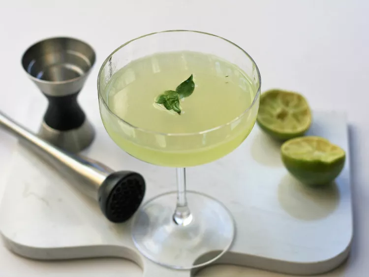

Basil Gimlet

Description
This tried-and-true gin and lime cocktail is made even more refreshing by adding a few muddled basil leaves. Make
sure you start with a chilled coupe glass.
Ingredients
- 6 large fresh basil leaves
- ¾ fluid ounce simple syrup
- 1 cup ice
- ¾ fluid ounce fresh lime juice
- 2 fluid ounces gin
- 1 small basil leaf for garnish
Steps
- Place coupe glass in the freezer while you are preparing the cocktail.
- Combine 6 basil leaves and simple syrup in a cocktail shaker and muddle until basil leaves are crushed. Add ice, lime juice, and gin. Cover and shake until chilled, 15 to 20 seconds.
- Strain cocktail into coupe glass and garnish with remaining basil leaf.